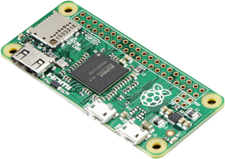
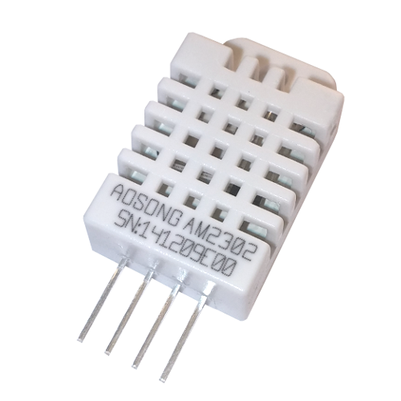
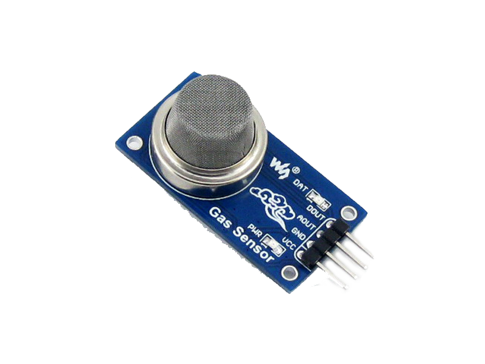
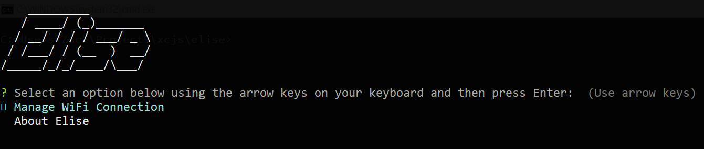
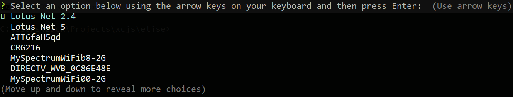

Of Crickets and Continuous Integration
A story of lending a hand, exploring technology, and scope creep. Presented by Zackary Lowery on January 24th, 2019 at Leading EDJE. Available online at https://xcjs.github.io/presentation-of-crickets-and-continuous-integration/Topics
- IoT with the Raspberry Pi Zero W
-
Node.js
- Interactive CLI Application Development
- Dependency Injection
- Unit Testing
- Hardware Integration
- Cross-platform Development
-
GitLab
- GitLab CI with the GitLab Runners

The Story
AnthonyThe Adventure Begins
Technical Requirements
| DHT-22 Temperature / Humidity Sensor | MQ2 Gas Sensor | AWS SDK |
|---|---|---|
|  |  | |
|
|
|
...and more. |
Supported Hardware
R-Pi Zero W
- BCM2835 SoC
- ARMv6
- No hardware floating point operations.

R-Pi 3
- BCM2835 SoC
- ARMv8
- armhf (hardware float)
x86/x84_64 (somewhat)
- Mock hardware sensors injected
Hardware Utilization and Services
BCM2835 Support
napa - A helper for installing stuff without a package.json with npm.
package.json
{
...
"scripts": {
"install": "napa",
...
},
...
"napa": {
"bcm2835": "http://www.airspayce.com/mikem/
bcm2835/bcm2835-1.55.tar.gz",
...
}
}
Reading the DHT-22
TemperatureSensorReader.js
var deferred = new Promise(function (resolve, reject) {
temperatureSensor.read(22, 22,
function (error, temperature, humidity) {
if (!error) {
var readout = {};
readout.temperature = temperature;
readout.temperatureFahrenheit =
temperatureConverter.convertCtoF(temperature);
readout.humidity = humidity;
resolve(readout);
} else {
reject(error);
}
});
});
Mocking the DHT-22
MockTemperatureSensor.js
function read(dhtModel, gpio, callback) {
// ...
var temperature = getRandomInt(15, 60);
var humidity = getRandomInt(0, 100);
// ...
setTimeout(function () {
callback(error, temperature, humidity);
}, 2000); // Maximum 2 second readout interval.
}
Reading the MQ-2
GasSensorReader.js
var deferred = new Promise(function (resolve, reject) {
if (gasSensor.busy) {
deferred.reject('The gas sensor is busy.');
return deferred;
}
gasSensor.readADCSingleEnded(
self.channel, self.progGainAmp, self.sampleRate,
function (error, data) {
if (!error) {
resolve(data);
} else {
reject(error);
}});
});
Mocking the MQ-2
MockGasSensor.js
function readADCSingleEnded(
channel, progGainAmp, sampleRate, callback) {
// ...
var gasLevel = getRandomInt(0, 65000);
callback(null, gasLevel);
// ...
}
Persistence
DynamoStorage.js
var docClient = new aws.DynamoDB.DocumentClient({
apiVersion: '2012-08-10'
});
var deferred = new Promise(function (resolve, reject) {
docClient.put(params, function (error, response) {
if (!error) {
resolve(response);
} else {
reject(error);
}
});
});
The Requirements Have Been Altered - Pray I Do Not Alter Them Further
Requirements
- Provide WiFi configuration through this application (now dubbed "Elise")
- Prevent users from running other applications.
- Improve responsiveness compared to the full desktop environment.
Accepting User Input
https://www.npmjs.com/package/inquirer
MainView.js
// ...
const choices = [
'Manage WiFi Connection',
'About Elise'
];
const question = {
name: 'main',
message: 'Select an option below using the arrow keys ' +
'on your keyboard and then press Enter: ',
type: 'list',
choices: self.choices
};
return inquirer.prompt([question]);
WiFi Configuration
node-wifi 
WifiController.js
var deferred = new Promise(function (resolve, reject) {
wifiService.scan(function (error, networks) {
if (!error) {
view.showMainMenu(networks).then
(promptForWifiPassword, showMainMenu)
.then(connectToWifi, checkIfBack).then(
function(connectedNetwork) {
resolve(connectedNetwork);
}, function (error) {
reject('...');
});
} else {
reject('...');
}});
});
The Deal is Altered Further
Nexe
Create a single executable out of your node.js apps

package.json
// ...
"scripts": {
// ...
"build": "npx nexe --build index.js -o bin/elise",
// ...
}
$ npm run build
Nexe Benefits
- Single-file deployment
- Includes embedding native modules (*.node files)
- Bundles known working version of the Node runtime with your application
- Runtime can be upgraded anytime during a normal deployment
GitLab and Continuous Integration
GitLab
GitLab is a single application for the entire software development lifecycle. From project planning and source code management to CI/CD, monitoring and security.
Gitlab Runner

CI Pipelines
Auto DevOps
.gitlab-ci.yml
Auto DevOps
Pre-configured pipeline centered around scalable web applictions.
.gitlab-ci.yml
In-repository configuration file for custom CI pipelines.
GitLab CI Structure
-
Pipeline
-
Stages
- Jobs
-
Stages
Elise's .gitlab-ci.yml
Stages
stages:
- Setup
- Analyze
- Test
- Build
- Stage
Cache Configuration
cache:
untracked: true
key: "$CI_COMMIT_REF_NAME"
paths:
- node_modules/
Setup
Setup:
stage: Setup
script:
- npm install
- cd ./node_modules/bcm2835
- ./configure
- make
- sudo make check
- sudo make install
- cd ../../
- npm rebuild
Analysis
Analysis:
stage: Analyze
script:
- npm run lint
- npm audit
Test
Test:
stage: Test
script:
- npm test
// ...
"scripts": {
// ...
"test": "npx nyc --reporter=html --reporter=text mocha
--recursive",
// ...
},
// ...
Build
Build:
stage: Build
script:
- npm run build
// ...
"scripts": {
// ...
"build": "npx nexe --build index.js -o bin/elise",
// ...
},
// ...
Stage
Virtual Staging:
stage: Stage
before_script:
- vagrant plugin install vagrant-vbguest
- vagrant box update
script:
- vagrant up
after_script:
- vagrant destroy --force
Tags
ARMv6/ARMv8
- Setup
- Analyze
- Test
- Build
x86_64
- Virtual Staging
GitLab Runners
ARMv6 / RUNNERPIZERO
ARMv8 / RUNNERPI